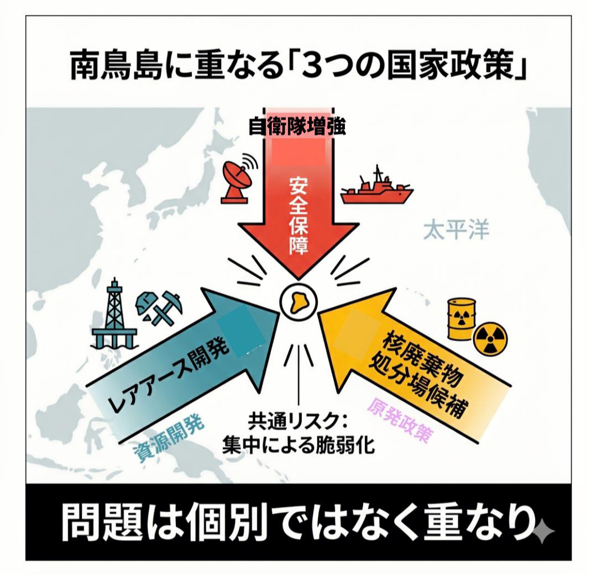

東京から約1,900km。太平洋の最果ての孤島・南鳥島に、今、計算された「積み上げ」が静かに進んでいる。レアアース開発、自衛隊拠点化、そして核廃棄物処分場選定——3つの国家意思が、同じ小さな島に重なりつつある。個々には理屈がある。だが、それらを一箇所に積み上げる是非だけが、奇妙なほど論じられていない。
南鳥島が注目を集めたきっかけは、海底レアアース泥の存在が政策日程に乗ったことだ。東京大学の調査で確認された規模は、希土類酸化物換算で1,600万トン超——日本の需要で換算すれば数百年分に相当するとされる。中国依存脱却という経済安全保障の切り札として、期待は膨らむ。
しかもこの島は、単なる資源の倉庫ではない。中国海軍の活動圏が太平洋深部へ広がる中、南鳥島周辺はすでに監視と牽制の最前線だ。自衛隊拠点化も、それ自体としては理解できる。ここまでは、まだつじつまが合っていた。

だが、そこへ核廃棄物処分場の候補地まで重ねるとなると、話は一変する。2026年4月13日、小笠原村の渋谷正昭村長は、経済産業省からの要請を受け、南鳥島での文献調査受け入れを表明した。北海道寿都町・神恵内村、佐賀県玄海町に続く全国4例目。だが決定的に違うのは、これが全国初の「国主導」ケースだという点である。
交付金は最大20億円。住民がいない。国有地だ。反対運動のリスクも低い。経産省がこの島を選んだ論理は、あまりにも露骨だ。
必要な政策を並べれば国家戦略になるわけではない。むしろ整然と並べられることで、全体の不整合が浮き彫りになる。
この問題の本質は、単なる立地論ではない。日本政治が長年抱えてきた習癖——社会全体で引き受けるべき重荷を、「遠く」「人口が少なく」「反対が可視化されにくい」場所へ静かに預けるという構図だ。沖縄の基地負担、過疎地への原発立地、そして廃棄物処分。中心が周縁に負担を押し付けるパターンは、今回も繰り返されている。
もちろん「核廃棄物はどこかに置かねばならない」という反論は正しい。発電の利益だけ享受して責任を先送りするのは不誠実だ。だが問われるべきは「どこに置くか」ではなく、「どのような手続きと倫理で決めるか」である。「住民がいないから反対が出にくい」という論理は、民主的な合意形成の基礎を意図的に迂回しているに過ぎない。
しかも南鳥島は、行政の空白地帯ではない。太平洋戦争中、防衛拠点として多くの命が失われた場所だ。いまも慰霊碑と遺構が残る。声なき島だからこそ、政治は慎重でなければならない。保守を標榜する者にとって、この歴史の重みは特に軽んじられない。
バークが警戒したのは、理性の名の下に共同体の蓄積を切り捨てる政治だった。土地に刻まれた記憶を軽視するなら、それは保守の仮面をかぶった技術官僚主義に過ぎない。
さらに看過できないのは、3つの機能を狭い孤島に集中させること自体が、安全保障上の逆説を孕んでいる点だ。軍事・資源・核廃棄物——平時は物流が複雑化し、有事には標的価値が跳ね上がる。精密誘導弾一発で三機能を同時に無力化できる標的を、自ら作ることになりかねない。集中すれば強くなるとは限らない。脆さが増すことすらある。
経産省、防衛省、それぞれが個別の合理性で動いている。だがその総和について、誰も責任を持って説明していない。省庁縦割りの弊害を「国家戦略」という言葉で包んでも、実態は変わらない。